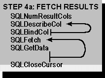

The next step is to fetch the results, as shown in the following figure.

If the statement executed in Step 3, “Build and Execute an SQL Statement,” was a SELECT statement or a catalog function, the application first calls SQLNumResultCols to determine the number of columns in the result set. This step is not necessary if the application already knows the number of result set columns, such as when the SQL statement is hard-coded in a vertical or custom application.
Next, the application retrieves the name, data type, precision, and scale of each result set column with SQLDescribeCol. Again, this is not necessary for applications such as vertical and custom applications that already know this information. It passes this information to SQLBindCol, which binds an application variable to a column in the result set.
The application now calls SQLFetch to retrieve the first row of data and place the data from that row in the variables bound with SQLBindCol. If there is any long data in the row, it then calls SQLGetData to retrieve that data. The application continues to call SQLFetch and SQLGetData to retrieve additional data. After it has finished fetching data, it calls SQLCloseCursor to close the cursor.
For a complete description of retrieving results, see Chapter 10, “Retrieving Results (Basic)” and Chapter 11, “Retrieving Results (Advanced).”
The application now returns to Step 3, “Build and Execute an SQL Statement,” to execute another statement in the same transaction; or proceeds to Step 5, “Commit the Transaction,” to commit or roll back the transaction.